Salidas¶
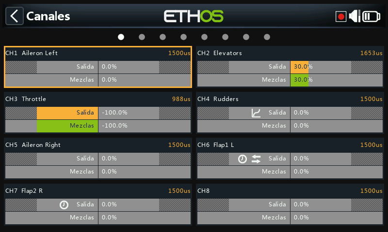
Las Salidas son la frontera entre la "lógica" pura de las Mezclas y el mundo real: servos, reenvíos, superficies de control, actuadores y transductores. Es donde los fines de recorrido, la inversión, el centrado y las curvas de corrección se adaptan a las características mecánicas del modelo. Cada canal de salida corresponde a una salida de servo del receptor (CH1 → conector de servo #1, con los ajustes de protocolo por defecto).
Ethos trabaja en porcentajes, pero los servos están controlados en última instancia por una señal PWM cuyo ancho de pulso se mide en microsegundos:
| % | µs |
|---|---|
| −150% | 732 |
| −100% | 988 |
| 0% | 1500 |
| 100% | 2012 |
| 150% | 2268 |
Warning
Un canal sin ninguna mezcla activa tendrá su salida ajustada a neutral (0% / 1500µs); esto incluye los canales cuya mezcla o mezclas estén inactivas en ese momento. Hay que tener cuidado en asegurarse de que todo canal que se utilice realmente tenga siempre una mezcla activa que lo respalde. En el canal del acelerador en concreto, el neutral significa medio motor.
La pantalla de Salidas muestra dos barras por canal: la barra inferior (verde) muestra el valor de las mezclas para ese canal, mientras que la barra superior (naranja) muestra el valor real de la Salida después del procesado, que es lo que se envía al receptor (tanto en % como en µs). Los límites Mín/Máx se indican con unas secciones grises en la barra naranja. Los canales que no se están emitiendo al módulo RF se muestran con un fondo más oscuro. En un canal aparecerán pequeños iconos cuando sus ajustes de Dirección, Curva, Lento o Equilibrado se hayan cambiado respecto a los valores por defecto, de modo que se pueden identificar de un vistazo los canales que no están por defecto.
Tip
Una pulsación larga de ENT desde la pantalla de Mezclas o desde las
pantallas de Modos de Vuelo le llevará directamente aquí.
Edición de un canal¶
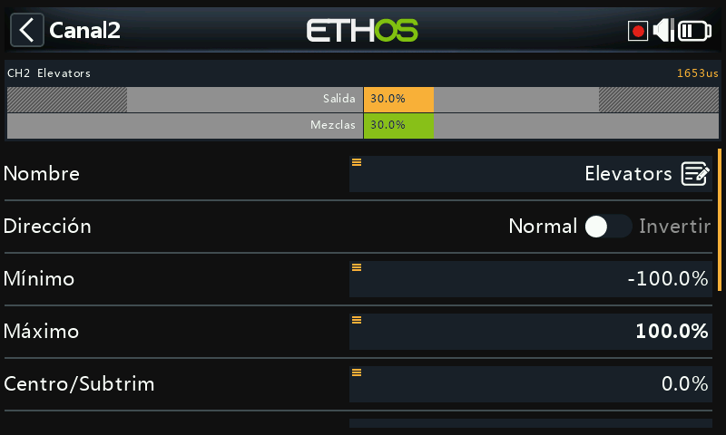
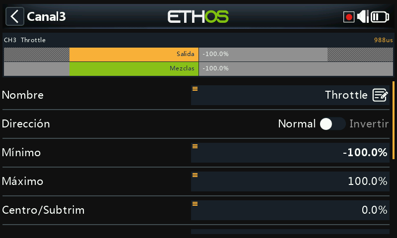
Pulse sobre un canal para abrirlo. En la parte superior se muestra una vista previa con el valor de la mezcla (en verde) frente al valor de salida del canal (en naranja), con unos pequeños marcadores blancos que denotan los puntos Mín/Máx del recorrido.
- Nombre: puede editarse.
- Dirección: invierte la salida del canal, normalmente para invertir el sentido de giro del servo. Aparece como un icono de doble flecha en el canal. No afecta a las mezclas que regulan la salida y tampoco intercambia los límites Mín/Máx.
- Mín/Máx: son límites "duros", es decir, no se pueden sobrepasar; deben ajustarse para evitar atascos mecánicos. Sirven como ajustes de ganancia o "punto final", por lo que reducirlos reduce el recorrido proporcionalmente en lugar de recortarlo. Los límites por defecto son de ±100%, pero pueden aumentarse hasta ±150%. Durante el ajuste, el extremo hacia el que se está moviendo estará marcado en negrita (por ejemplo, mueva ligeramente la palanca del elevador hacia arriba y el valor Máx se mostrará en negrita, para indicar que es el extremo que se está ajustando).
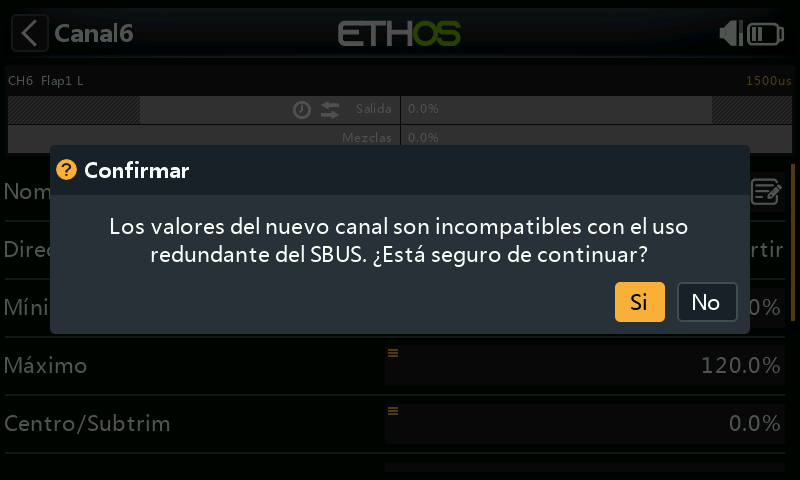
!!! warning "Redundancia SBUS" Cuando se utiliza un sistema redundante con SBUS, no es posible realizar movimientos del servo superiores a aproximadamente ±125%. Los propios campos Mín/Máx tienen recorridos asimétricos (−150–0% y 0–150%): si se accionan desde una Var, a menos que la Var tenga un recorrido idéntico será necesario activar Ignorar recorrido (vea las opciones de fuente), o la conversión automática de los recorridos producirá valores inesperados. Si la salida del receptor principal supera el 125% y este entra en modo a prueba de fallos, el receptor redundante que toma el control a través de SBUS la limitará al 125%.
- Centro/Subtrim: introduce un offset en la salida, típicamente para centrar el brazo de un servo; los puntos finales de recorrido no se ven afectados.
!!! warning No caiga en la tentación de utilizar el subtrim para añadir grandes compensaciones: sólo se conseguirá una gran cantidad de diferencial en la respuesta del servo. La forma correcta es añadir una mezcla con offset para todo lo que vaya más allá de un centrado fino.
- Centro del PWM: es similar al subtrim, con la diferencia de que un ajuste hecho aquí desplaza toda la banda de movimiento del servo, incluyendo los límites físicos, ya que se hace efectivamente en el propio servo y no será visible en el monitor del canal. Así se separa la función de centrado mecánico de la función de compensado.
- Curva: permite seleccionar una curva Expo o personalizada (existente o nueva, con un botón Editar una vez configurada) para corregir la respuesta en el mundo real; por ejemplo, para asegurar que los flaps izquierdo y derecho se mueven con precisión. Aparece como un icono de curva en el canal.
- Lento arriba/abajo: ralentiza la respuesta de la salida con respecto a los cambios de la entrada; el valor es el tiempo en segundos que tardará la salida en cubrir el rango de 0 a 100%. Podría utilizarse, por ejemplo, para ralentizar el movimiento del tren de aterrizaje cuando se acciona mediante un servo proporcional normal. Aparece como un icono de reloj en el canal. (Un retardo, distinto de "lento", está disponible en los interruptores lógicos).
Intercambio de canales¶
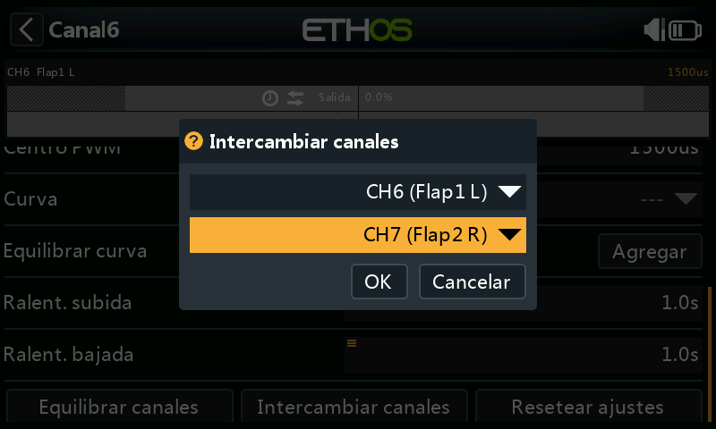
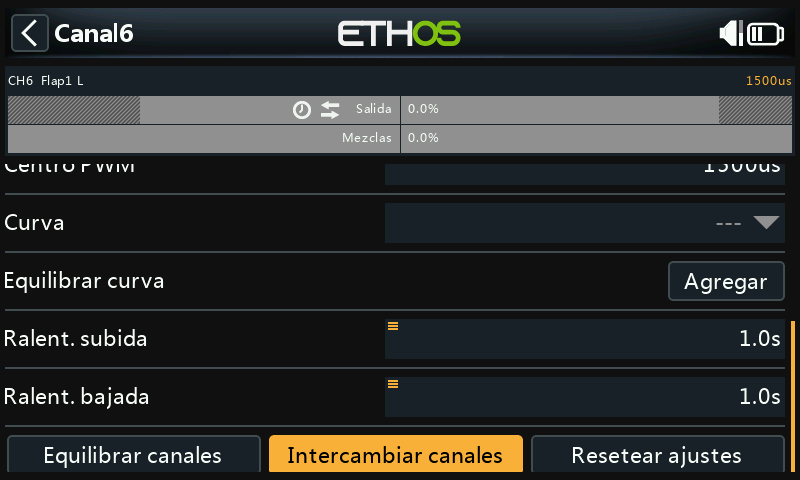
Permite intercambiar dos canales de salida. El diálogo se abrirá con el canal actual ya relleno; seleccione el otro canal y confirme. Tenga en cuenta que el intercambio ocurre inmediatamente y que todas las mezclas que hagan referencia a cualquiera de los dos canales se ajustarán adecuadamente.
Restablecer ajustes¶
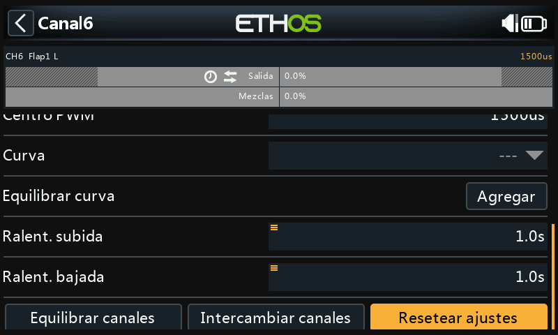
Borra todos los parámetros del canal devolviéndolos a sus valores por defecto, lo que resulta útil antes de reutilizar un canal para otra cosa. Un diálogo de confirmación aparece para evitar borrados accidentales.
Equilibrar canales¶
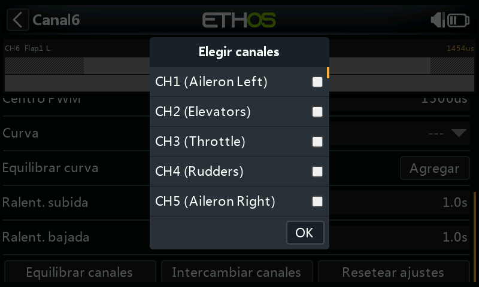
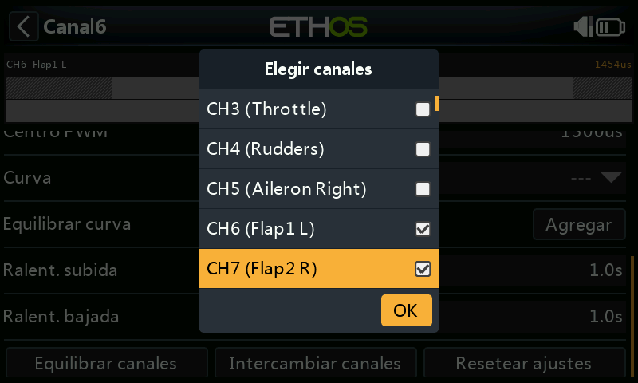
Permite equilibrar una pareja (o hasta 4) de canales para asegurarse de que se mueven al unísono. Por ejemplo, tener los flaps desequilibrados puede resultar en un alabeo no deseado, mientras que un desequilibrio en los motores de un modelo multimotor puede resultar en una guiñada indeseada. Ethos creará automáticamente una curva de equilibrado diferencial para cada canal seleccionado; comparando las posiciones físicas de las superficies de control en cada punto de las curvas, se pueden ajustar fácilmente para que sean iguales, y el resultado final es un ajuste perfecto del movimiento de las superficies.
Antes de equilibrar, siga este orden:
- Ajuste correctamente las direcciones de los servos de cada superficie.
- Con las mezclas en neutral, use si es necesario el Centro del PWM para ajustar correctamente los ángulos de los reenvíos de los servos.
- Configure los límites Mín/Máx y el Subtrim.
- Configure todas las otras curvas.
- Configure Lento.
- Entonces proceda a equilibrar y ecualizar el movimiento a lo largo de todo el recorrido.
Cómo se usa: elija los canales a equilibrar y el orden en que desea que aparezcan en la pantalla:
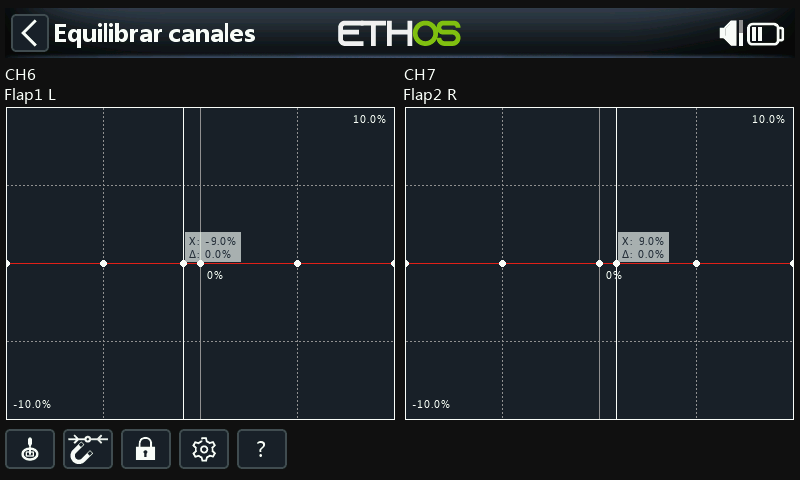
La salida de la mezcla se muestra a lo largo del eje X, mientras que los valores
del ajuste de equilibrado diferencial se muestran en el eje Y. Toque en el
gráfico de uno de los canales (o selecciónelo y pulse ENT) para editar su
curva de equilibrado; la tecla PAGE sirve para cambiar de canal mientras se
están editando las curvas:
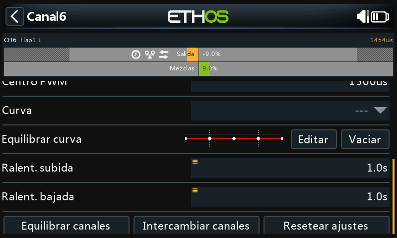
Botones del menú:
- Fuente: normalmente se usan la o las fuentes configuradas en las mezclas de los canales, u opcionalmente cualquier otro input analógico; con la opción Auto analog input, la primera palanca, slider o pot que mueva se usará como fuente para el eje X, no sólo en el gráfico sino también en el modelo.
- Imán: el punto más cercano del eje X de la curva se seleccionará automáticamente para su ajuste con el selector rotatorio:
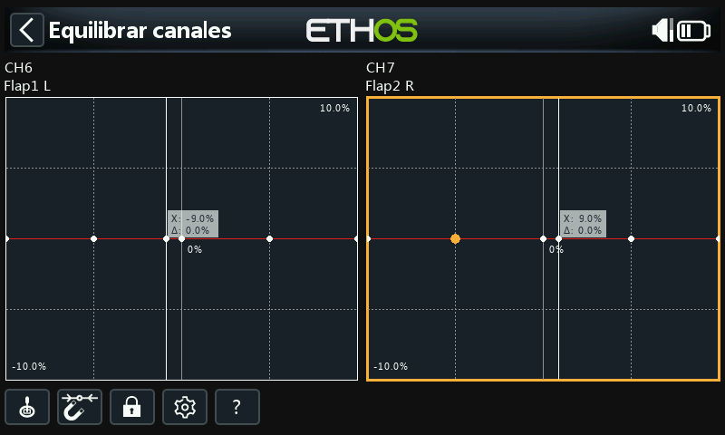
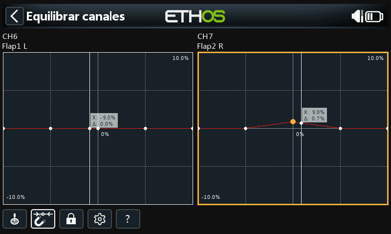
La entrada debe ajustarse para alinear el valor de X con un punto de la curva
antes de que el ajuste se realice.
- Bloqueo: tocando en el icono del candado, o presionando ENT mientras se
está en la edición del gráfico, se conmuta el modo bloqueo; cuando está
activado, todas las entradas quedan bloqueadas para que pueda soltar la
palanca y observar las superficies de control mientras ajusta la curva.
- Configuración: permite cambiar el número de puntos por canal (todos o
individualmente) y si cada curva se suaviza.
- Ayuda (?, también la tecla MDL): abre la ayuda integrada.
Multicanal: se pueden equilibrar hasta 4 canales conjuntamente:
Una vez configurada, una curva de equilibrado se puede revisar, editar o borrar desde la propia página de configuración del canal; un icono de equilibrado la identifica en el gráfico del canal (junto con un icono de Dirección, si este tampoco está en su valor por defecto).